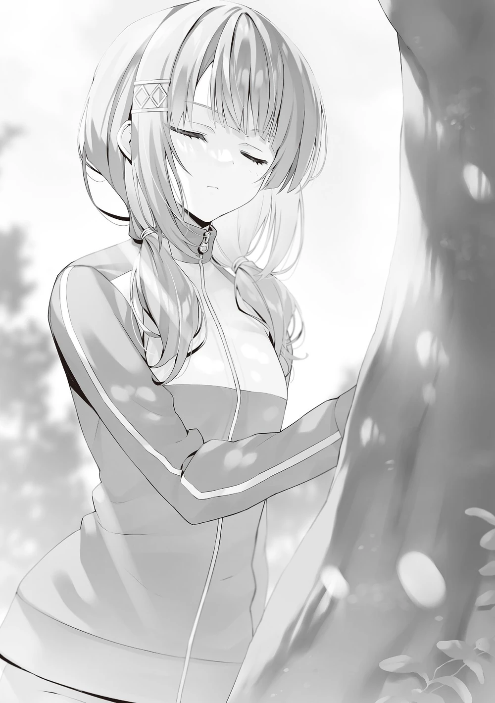

15 dakika içinde, üçüncü günün ilk oryantasyon toplantısı oyununda karşılaşacak takımlar açıklanacaktı.
Oyunun ismi ‘Shogi’.
(ÇN: Japon satrancı veya Kumandanlar Oyunu olarak da bilinen Şogi ya da Shōgi, Japonya kökenli, satrançla akraba iki kişilik soyut kombinatoryal ve eksiksiz bir strateji oyunudur.)
Kiryūin’in seçtiği katılımcılar; ben, Morishita, Hashimoto, Hiyori ve Tsubaki’ydi.
Buna karşın grubumuz, bir üyesi eksik olarak maça çıkmak üzereydi.
“Morishita hangi cehennemde? Sonraki tur onun sırası…”
“Arama düşmüyor.”
Hiyori, telefon kulağındayken ona ulaşamadığını bildirdi.
“Morishita’yı en son ne zaman gördün?”
“Onu en son kahvaltıda gördüm. Seninle birlikte gitti, değil mi Ayanokōji?”
Yemeği aynı anda bitirdiğimiz için yemekhaneden beraber çıktığımızı hatırladım.
Bunun üzerinden bi’ yarım saat geçmişti, sonrasında da yürüyüşe çıkacağını söylemişti.
Hâlâ yürüyüşte olabilir miydi, ya da başına bir şey mi gelmişti?
Normalde yolunu kaybetmezdi ama kendini dağ yoluna vurduysa o zaman işler değişirdi.
Morishita’nın kişiliğini düşününce bu imkânsız değildi.
“Shogi’de üstüme adam tanımam diyordu…”
“Çevrimiçi maçlar yaparak hazırlandığını söylemişti.”
“Aklım almıyor…”
Kiryūin onu, iddialı hareketlerine ve güvenine bakarak seçmişti.
Okçuluktaki kaybını telafi etmek istiyor olmalıydı.
“Eğer Morishita yoksa, yerine geçecek birini bulmamız gerek. Hâlâ biraz vakit var, ben gidip dışarıya bakacağım. Hashimoto, sen içeriyi kontrol eder misin?”
“Tamamdır. Onu bulursam haber ederim.”
Hemen onu aramaya koyuldum ve birkaç dakika içinde Morishita’yı buldum.
Kaybolmuş gibi durmuyordu.
Ona seslenmeden önce Hashimoto’ya bir mesaj yolladım ve onu bulduğumu bildirdim.
Ardından Morishita’nın yanına gittim.
“Oyun başlamak üzere.”
Beni duymazlıktan geliyordu.
Sessizce bir ağaca dokunuyordu.
‘Ayaktayken uyuyamaz, o zaman ne yapıyor bu?’ diye içimden geçirdim.
“Morishita?”
“Lütfen sessiz ol. Ormanın tınısını dinliyorum.”
Morishita yavaşça fısıldadı.
“…Ha?”
Ancak söylediği şeyi algılayamadım ve istemeden ona tekrar sordum.
“Ormanın tınısı mı?”
“Ormanın canlı olduğunu anlayamıyor musun. Bunun gibi büyük bir ağaca dokunur, gözlerini kapatır, zihnini sakinleştirir ve kulak verirsen, o zaman neyden bahsettiğimi anlayabilirsin.”

“…Anlıyorum?”
Morishita’nın dediklerinden şu ana kadar hiçbir şey anlamamıştım.
‘Belki de denemek iyi bir fikir olabilir.’ diye geçirdim içimden.
Morishita’nın yanında durdum ve aynı şekilde elimi ağaca bastırdım.
Sonra, gözlerimi kapattım.
Tek yapmam gereken zihnimi sakinleştirmek ve kulak vermekti.
“Duyuyor musun? Ormanın tınısını.”
“Yok…”
“Demek ki hâlâ bir şey dikkatini dağıtıyor.”
Maalesef, bunca zaman duygularımdan arınmaktaydım yani dikkatimin dağılmasının ihtimali bile yoktu.
Düşündüğüm gibi, hiçbir şey duyamadım. Duymamın da bir yolu yoktu.
“Burnundan nefes al ve ağzından ver.”
Morishita hâlâ ısrar ediyordu.
“Bu mantıklı mı?”
“Yani, bir keresinde üşüttüğümde kulak burun boğaz doktorunun ofisinde burnumdan nefes alıp ağzımdan vermem söylenmişti.”
“Nebulizatör de böyle kullanılmıyor mu zaten…?”
Bir bakıma kafamın içi zorla dikkat dağıtıcı şeylerle doldurulmuştu.
Ne var ki, ormanın tınısını duyamamıştım.
“Ne yapıyorsun?”
Gözlerimi açıp Morishita’ya baktığımda, telefonunun kamerasını bana doğru tutuyordu.
“4K UHD Ayanokōji Kiyotaka adlı şahsın yalanlarıma kanışını kaydediyorum.”
“Hey!..”
“Ormanın tınısını duyamazsın. Haddinden fazla dizi ve film izlemişsin.”
“Başlatan sendin. Sen de dinliyor gibiydin.”
“Utanma. Ormanın tınısını dinlemeye çalışmanı bir sır olarak saklayacağım.”
Beni kaydetmese ve böyle kanıt bırakmasaydı daha iyiydi ya, neyse.
“Ama hastanedeki soluma cihazının adının nebulizatör olduğunu bilmiyordum. Sayende gereksiz bir bilgi öğrendim. Sağ ol.”
Bunun gereksiz bilgi olduğunu söylemesi aslında minnettar olmadığının göstergesiydi.
“Ayanokōji Kiyotaka sen, ilginç birisin.”
Acaba Morishita’nın aşırı derecede daha ilginç olduğunu düşünen bir tek ben miyim diye merak ediyordum.
“Bu arada, benden bir isteğin var mı?”
“Seni aramaya geldim çünkü toplanma vaktinde ortada yoktun.”
“Şimdi sen bahsedince aklıma geldi, sanırım hatalı davrandım.”
Morishita özürü andıran bir açıklama yaptıktan sonra ağaçtan uzaklaştı.
Kiryūin’in beklemekte olduğu binaya doğru yürümeye başladı.
“Sana bir şey sorabilir miyim?”
Bakışlarımı Morishita’ya çevirip konuşması için usulca teşvik ettim.
“Hashimoto Masayoshi hakkındaki görüşün nedir?”
“Bu oldukça geniş çaplı bir soru.”
“Sormam gerek diye düşündüm. Birkaç kez bu fırsatı aradım ama doğru ânı hiç yakalayamadım.”
“Ağaçların arasındasın diye yanına geleceğimi mi sandın?”
“Senin kendi kendine beni arayacağını düşünmüştüm.”
Garip bir kişiliği vardı ama o da bir stratejistti.
“A sınıfının bir öğrencisi olarak sen onun hakkında ne düşünüyorsun?”
“Bunu soracağını düşünmüştüm. Tabii ki de sınıf olarak birleşmeli ve onu sınıfımızdan kovmalıyız.”
Hashimoto’yu katî surette bir baş belası olarak tanımladı.
“Ya ben Hashimoto’nun tarafındaysam? O zaman beni karşına almış olmaz mıydın?”
“Yalan söylersem, yalanla karşılık vereceğine inanıyorum. O yüzden yapabileceğim en iyi şeyin dürüstçe konuşmak olduğuna karar verdim.”
Nasıl müzakere edeceğini biliordu.
Eğer Hashimoto’yu desteklediğini yalnızca birkaç temelsiz gerekçeyle îmâ etseydi ve bana yakalansaydı, bu şekilde güvenimi kazanamazdı.
Muhakemesi seri ve keskindi, ek olarak sözünü de sakınmıyordu.
İkinci sınıflar içinde gördüklerim arasında o, bu alanda cidden nadir bir yetkinliğe sahipti.
Elbette böyle bir kişiliği yüz yüze gelip konuşmadıkça anlayamazdınız.
“Dürüstlüğüne karşılık vermek isterdim ama doğrusu ben başka bir sınıftan olduğum için bunun beni ilgilendiren bir sorun olduğunu sanmıyorum. Ha Sakayanagi gelecekte Hashimoto’yu atmaya çalışmış, ha Hashimoto Sakayanagi’yi göndermeye uğraşmış, beni ilgilendirmez. İstediklerini yapabilirler.”
“Yani Hashimoto Masayoshi’nin tarafını tutmaya hiç niyetinin olmadığını mı söylüyorsun?”
“Hiç yok.”
Tereddüt etmeden başımı salladım ve bunu onayladım.
O bundan şüphe duymuş olabilir ama aslında gerçeği söylüyordum. Bu yalan değildi.
“Tabii ki de şu anda aynı grubun bir mensubu olarak onunla aramdaki mesafeyi uygun bir seviyede tutacağım ve işbirliğine dayalı bir ilişki sürdüreceğim.”
“Demek öyle? Biraz rahatladım.”
Muhtemelen bu, Sakayanagi’nin grubuna katılmaktan ziyade Hashimoto karşıtı olduğumu söylemeye daha yakındı.
“Sadece bilmek için soruyorum, eğer Hashimoto’nun tarafını tutsam problem olur muydu?”
“Evet, problem olurdu. Bence Sakayanagi Arisu on maçın dokuzunu alırdı ama Ayanokōji Kiyotaka Hashimoto Masayoshi’yi desteklediğinde durum tehlikeli bir hâl alırdı.”
Görünen o ki, Morishita varlığıma sandığımdan daha çok değer veriyor.
“Sana çok değer veriyor olmam garip mi, Ayanokōji Kiyotaka?”
“İlk konuştuğumuzda öyle hissetmedim.”
Tabii ki izlendiğimi anladım ama böylesine izlendiğimi bilmiyordum.
“Genellikle beklentiler ve gerçek arasında fark vardır. Çoğunlukla hayal kırıklığı yaşatır, o yüzden çıtayı düşürürüm ama etrafımdaki tepkilere ve bakışlara tanık olunca hayal kırıklığı olmadığını anladım.”
Direkt gördüğü ya da duyduğu bir şeyden ziyade hislerine dayalı bir tahmindi bu.
Yüksek zekasına ve sezgilerine dayanan bir değerlendirme.
Kōenji’nin kadın versiyonu - Morishita’yı böyle adlandırmak kabalık olurdu ama karakter tipleri bakımından biraz benzer olabilirlerdi. Daha az eksantriklik ve daha çok mantık içeren hâli gibi bir şeydi.
Hayır, nasıl ifade edersem edeyim onu Kōenji ile kıyaslamak doğru değildi.
“O zaman, Sakayanagi Arisu’nun tarafını tutma ihtimalin var mı?”
“Hayır. Aksine o, benim şu anda üzerine düşünmem gereken biri değil.”
Aslen Hashimoto, Sakayanagi için çok daha zayıf bir rakipti. Benim yardım etmemi gerektiren bir durum yoktu.
“Ama…”
“Ama ne?”
“Hashimoto’nun da Sakayanagi’nin de ellerinden geleni ardlarına koymadan çarpışmaları gerektiğini düşünüyorum. Her ikisi de tüm kapasitelerini gösterdiklerinde kazananı belirlemek en iyisidir. Bu sadece benim fikrim tabii.”
Hashimoto hâlâ etrafındakileri gözleme fırsatı olmaksızın kendi başına hücum ediyordu. Ve onun ihanetini takip eden Kamuro da ayrıldığı için, Sakayanagi tüm kapasitesini açığa vurmakta zorlanıyor olabilirdi.
Eğer ikisinin de sorunlarını giderme imkânım olsaydı, bunu maçtan önce yapmak isterdim.
“Düşüncelerini gayet iyi anlıyorum, teşekkürler Ayanokōji Kiyotaka.”
Muhtemelen kafasında bir şeyleri rayına oturtmuş şekilde Morishita hafifçe gülümsedi ve başını eğdi.
“Umarım bu sorun en yakın zamanda çözülür. Eğer bu iç çekişme yarım yıl boyu, hatta tüm bir yıl boyunca devam ederse A Sınıfı zarar görür.”
“Doğru.”
Eğer sorun buysa, Morishita’nın korkuları yersizdi.
Sakayanagi ve Hashimoto arasındaki problemin yakında sona ermesini planlıyordum.
Morishita ağacın altından uzaklaşmaya başladı.
“Pekâlâ, artık yola koyulalım. Ormanda oynayıp durma. Tam bir veletsin.”
“Oynayan sendin…”
Ben sadece bu olayın içine sürüklenen bir kurbandım.
Bununla birlikte, Morishita Shogi’de övündüğü kadar iyiydi.
Günlük çevrimiçi maçlarla pekişmiş yeteneği, sadece havadan ibaret değildi.